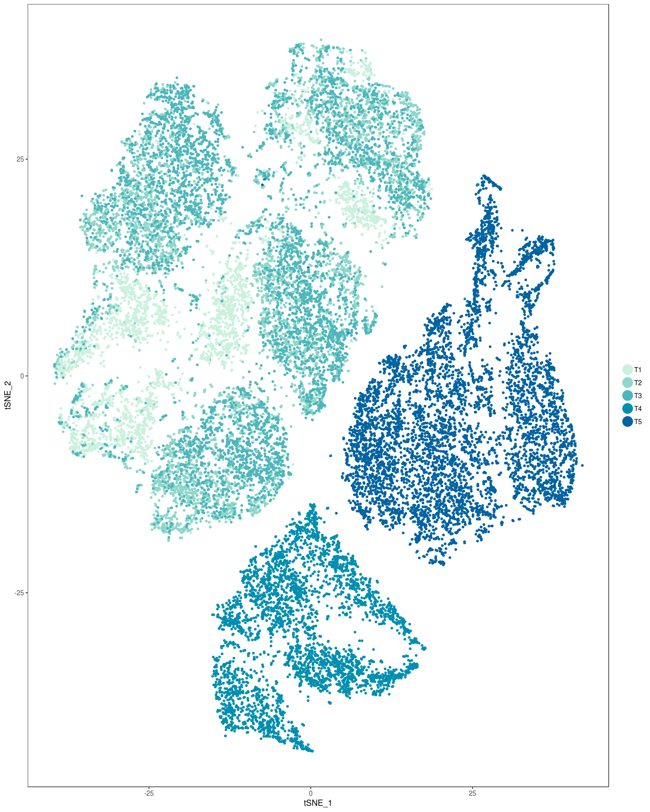
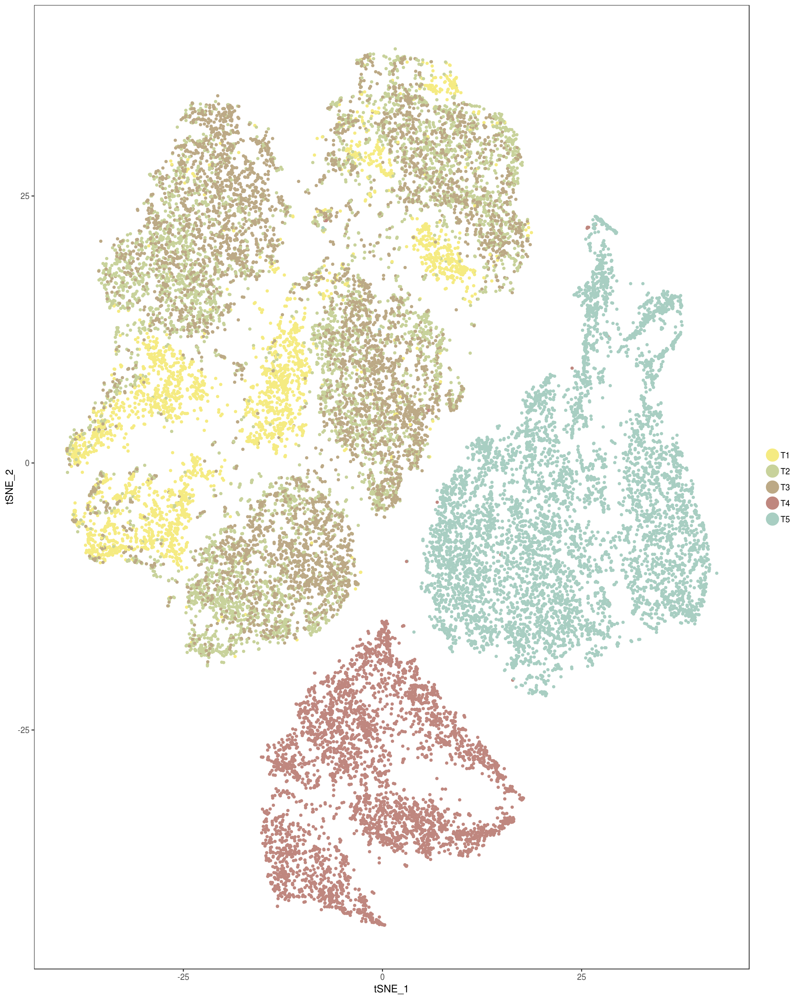
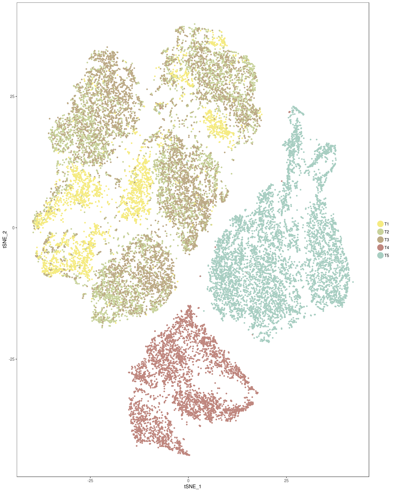
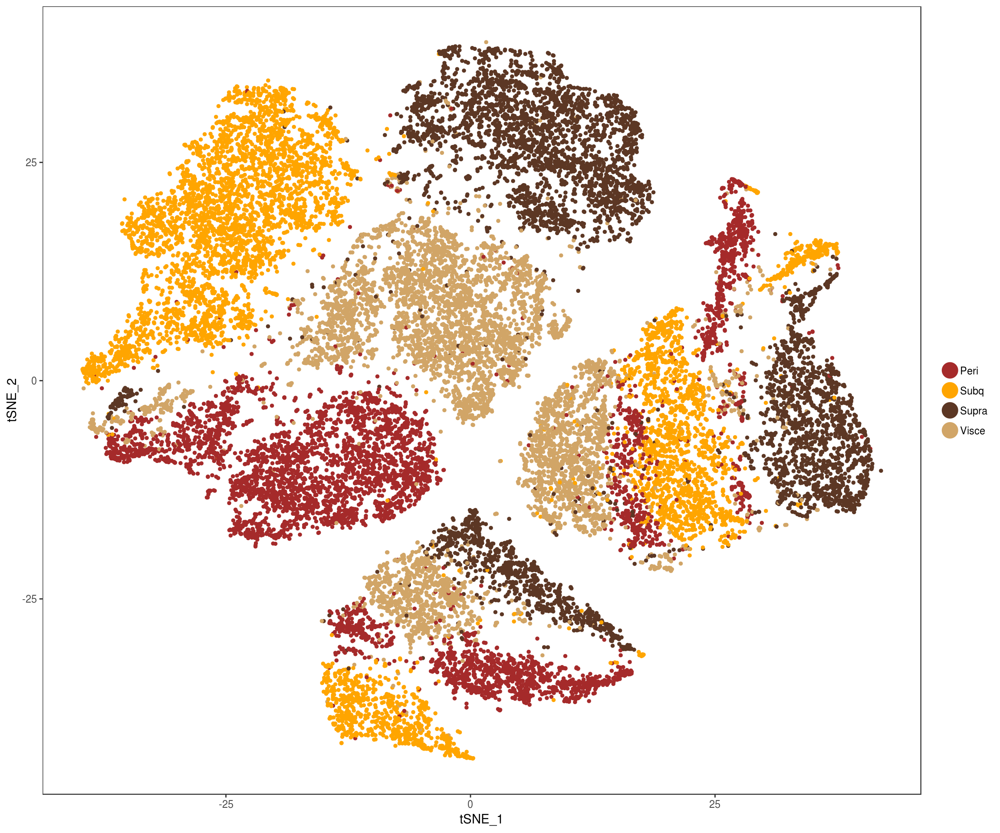
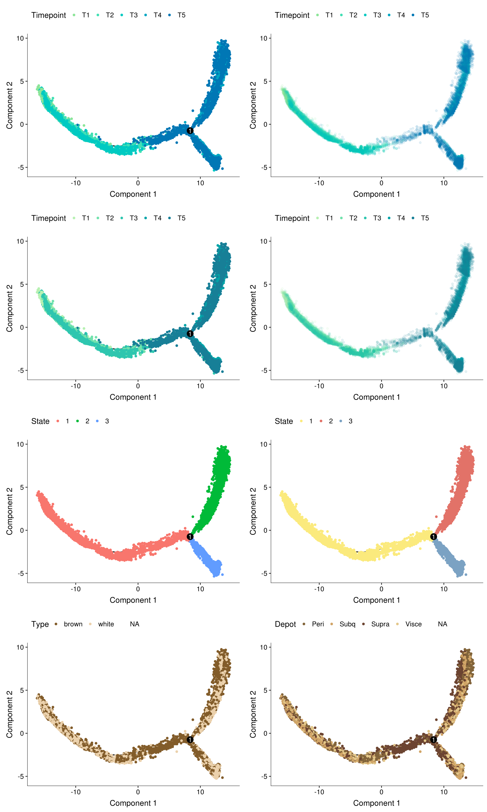
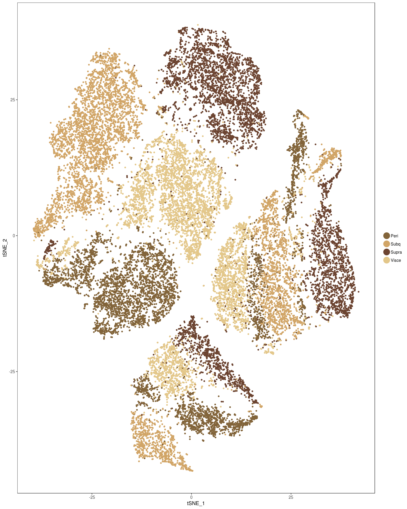

R Notebook
Last updated: 2019-03-29
Checks: 6 0
Knit directory: 10x-adipocyte-analysis/
This reproducible R Markdown analysis was created with workflowr (version 1.2.0). The Report tab describes the reproducibility checks that were applied when the results were created. The Past versions tab lists the development history.
Great! Since the R Markdown file has been committed to the Git repository, you know the exact version of the code that produced these results.
Great job! The global environment was empty. Objects defined in the global environment can affect the analysis in your R Markdown file in unknown ways. For reproduciblity it’s best to always run the code in an empty environment.
The command set.seed(20181026) was run prior to running the code in the R Markdown file. Setting a seed ensures that any results that rely on randomness, e.g. subsampling or permutations, are reproducible.
Great job! Recording the operating system, R version, and package versions is critical for reproducibility.
Nice! There were no cached chunks for this analysis, so you can be confident that you successfully produced the results during this run.
Great! You are using Git for version control. Tracking code development and connecting the code version to the results is critical for reproducibility. The version displayed above was the version of the Git repository at the time these results were generated.
Note that you need to be careful to ensure that all relevant files for the analysis have been committed to Git prior to generating the results (you can use wflow_publish or wflow_git_commit). workflowr only checks the R Markdown file, but you know if there are other scripts or data files that it depends on. Below is the status of the Git repository when the results were generated:
Ignored files:
Ignored: analysis/figure/
Ignored: figures/
Ignored: output/bulk_analysis/
Ignored: output/markergenes/
Ignored: output/monocle/
Ignored: output/seurat_objects/
Ignored: output/velocyto/
Ignored: output/wgcna/
Ignored: tables/
Untracked files:
Untracked: analysis/.ipynb_checkpoints/velocyto_notebook_180831-checkpoint.ipynb
Untracked: analysis/10x-180831-monocle-featureselection.Rmd
Untracked: analysis/10x-180831-monocle.Rmd
Unstaged changes:
Modified: analysis/10x-180831-general-analysis.Rmd
Modified: analysis/velocyto_notebook_180831.ipynb
Modified: code/run-monocle.R
Note that any generated files, e.g. HTML, png, CSS, etc., are not included in this status report because it is ok for generated content to have uncommitted changes.
There are no past versions. Publish this analysis with wflow_publish() to start tracking its development.
library(Seurat)Loading required package: ggplot2Loading required package: cowplot
Attaching package: 'cowplot'The following object is masked from 'package:ggplot2':
ggsaveLoading required package: Matrixlibrary(monocle)Loading required package: BiobaseLoading required package: BiocGenericsLoading required package: parallel
Attaching package: 'BiocGenerics'The following objects are masked from 'package:parallel':
clusterApply, clusterApplyLB, clusterCall, clusterEvalQ,
clusterExport, clusterMap, parApply, parCapply, parLapply,
parLapplyLB, parRapply, parSapply, parSapplyLBThe following objects are masked from 'package:Matrix':
colMeans, colSums, rowMeans, rowSums, whichThe following objects are masked from 'package:stats':
IQR, mad, sd, var, xtabsThe following objects are masked from 'package:base':
anyDuplicated, append, as.data.frame, basename, cbind,
colMeans, colnames, colSums, dirname, do.call, duplicated,
eval, evalq, Filter, Find, get, grep, grepl, intersect,
is.unsorted, lapply, lengths, Map, mapply, match, mget, order,
paste, pmax, pmax.int, pmin, pmin.int, Position, rank, rbind,
Reduce, rowMeans, rownames, rowSums, sapply, setdiff, sort,
table, tapply, union, unique, unsplit, which, which.max,
which.minWelcome to Bioconductor
Vignettes contain introductory material; view with
'browseVignettes()'. To cite Bioconductor, see
'citation("Biobase")', and for packages 'citation("pkgname")'.Loading required package: VGAMLoading required package: stats4Loading required package: splinesLoading required package: DDRTreeLoading required package: irlbalibrary(colorspace)seurobj <- readRDS('output/seurat_objects/180831/10x-180831')Colors
hcl_palettes(plot = TRUE)Timepoint colors
plot_grid(
TSNEPlot(seurobj, group.by='timepoint', pt.size=1, colors.use=rev(sequential_hcl(5, palette='TealGrn'))),
TSNEPlot(seurobj, group.by='timepoint', pt.size=1, colors.use=rev(sequential_hcl(5, palette='BluGrn'))),
TSNEPlot(seurobj, group.by='timepoint', pt.size=1, colors.use=rev(sequential_hcl(5, palette='Blue Yellow'))),
TSNEPlot(seurobj, group.by='timepoint', pt.size=1, colors.use=rev(sequential_hcl(5, palette='PurpOr')))
)Custom colors timepoints
plot_grid(
TSNEPlot(seurobj, group.by='timepoint', pt.size=1, colors.use=rev(c('#0263A1', '#008FB0', '#4CB6BC', '#8ED7CA', '#CBF1DE'))),
TSNEPlot(seurobj, group.by='timepoint', pt.size=1, colors.use=rev(c('#4847A1', '#0087BE', '#00BED1', '#3DEFDA', '#B0FFDF'))),
TSNEPlot(seurobj, group.by='timepoint', pt.size=1, colors.use=rev(c('#00589C','#008DA5', '#00B9A1', '#6DDD95', '#D7F797'))),
TSNEPlot(seurobj, group.by='timepoint', pt.size=1, colors.use=rev(c('#0077B5', '#00A7C3', '#00CAC2', '#42E0B4', '#8CE599'))),
TSNEPlot(seurobj, group.by='timepoint', pt.size=1, colors.use=rev(c('#005090','#007C98','#00A39B','#00C598','#86E094'))),
TSNEPlot(seurobj, group.by='timepoint', pt.size=1, colors.use=c('#f5eb82','#c8d29b','#bca986','#bf877f','#a8cec2')), ncol=2, labels=c('custom1', 'custom2', 'custom3', 'custom4', 'custom5', 'custom6')
) 

Depots
plot_grid(
TSNEPlot(seurobj, group.by='depot', pt.size=1, colors.use=c('#825c2a', '#ebd1ac', '#5c3724', '#eab476')),
TSNEPlot(seurobj, group.by='depot', pt.size=1, colors.use=c('#82643a', '#d1a567', '#6c4431', '#e3c78a')),
TSNEPlot(seurobj, group.by='depot', pt.size=1, colors.use=c('#825c2a', '#ebd1ac', '#5c3724', '#d1a567')),
TSNEPlot(seurobj, group.by='depot', pt.size=1, colors.use=c('brown', 'orange', '#5c3724', '#d1a567')),
ncol=2
)
Monocle
cds <- readRDS('output/monocle/180831/monocle_T1T2T3_T4T5_res1.5/10x-180831-monocle-metadata')plot_grid(
plot_cell_trajectory(cds, color_by='timepoint') + scale_color_manual(values=rev(c('#0077B5', '#00A7C3', '#00CAC2', '#42E0B4', '#8CE599')), name = "Timepoint"),
plot_cell_trajectory(cds, color_by='timepoint') + geom_point(color='white', size=5) + geom_point(aes(colour=timepoint), alpha=0.1) + scale_color_manual(values=rev(c('#0077B5', '#00A7C3', '#00CAC2', '#42E0B4', '#8CE599')), name = "Timepoint"),
plot_cell_trajectory(cds, color_by='timepoint') + scale_color_manual(values=rev(sequential_hcl(5, palette='TealGrn')), name = "Timepoint"),
plot_cell_trajectory(cds, color_by='timepoint') + geom_point(color='white', size=5) + geom_point(aes(colour=timepoint), alpha=0.1) + scale_color_manual(values=rev(sequential_hcl(5, palette='TealGrn')), name = "Timepoint"),
plot_cell_trajectory(cds),
plot_cell_trajectory(cds) + scale_color_manual(values=c('#fbea7d', '#e27268', '#7ba2c3'), name='State'),
plot_cell_trajectory(cds, color_by='type') + scale_color_manual(values=c('#825c2a', '#ebd1ac'), name='Type'),
plot_cell_trajectory(cds, color_by='depot') + scale_color_manual(values=c('#82643a', '#d1a567', '#6c4431', '#e3c78a'), name='Depot'),
ncol=2
)
Monocle predictions in Seurat tSNE
plot_grid(
TSNEPlot(seurobj, group.by='State.old', pt.size=1, colors.use=c('#ecdd83', '#e27268', '#93c8bc')),
TSNEPlot(seurobj, group.by='State.old', pt.size=1, colors.use=c('#fbea7d', '#e27268', '#93c8bc')),
TSNEPlot(seurobj, group.by='State.old', pt.size=1, colors.use=c('#f6776f', '#1bb840', '#649efc')),
TSNEPlot(seurobj, group.by='State.old', pt.size=1, colors.use=c('#66cc7d', '#f6776f', '#649efc')),
ncol=2
)Final figures
plot_grid(
TSNEPlot(seurobj, group.by='depot', pt.size=1, colors.use=c('#82643a', '#d1a567', '#6c4431', '#e3c78a')),
TSNEPlot(seurobj, group.by='timepoint', pt.size=1, colors.use=rev(c('#0077B5', '#00A7C3', '#00CAC2', '#42E0B4', '#8CE599'))),
plot_cell_trajectory(cds, color_by='depot') + scale_color_manual(values=c('#82643a', '#d1a567', '#6c4431', '#e3c78a'), name='Depot'),
plot_cell_trajectory(cds, color_by='timepoint') + geom_point(color='white', size=5) + geom_point(aes(colour=timepoint), alpha=0.1) + scale_color_manual(values=rev(c('#0077B5', '#00A7C3', '#00CAC2', '#42E0B4', '#8CE599')), name = "Timepoint"),
TSNEPlot(seurobj, group.by='State.labels', pt.size=1, colors.use=c('#93c8bc', '#fbea7d', '#e27268')),
ncol=2
)
sessionInfo()R version 3.5.3 (2019-03-11)
Platform: x86_64-pc-linux-gnu (64-bit)
Running under: Storage
Matrix products: default
BLAS/LAPACK: /usr/lib64/libopenblas-r0.3.3.so
locale:
[1] LC_CTYPE=en_US.UTF-8 LC_NUMERIC=C
[3] LC_TIME=en_US.UTF-8 LC_COLLATE=en_US.UTF-8
[5] LC_MONETARY=en_US.UTF-8 LC_MESSAGES=en_US.UTF-8
[7] LC_PAPER=en_US.UTF-8 LC_NAME=C
[9] LC_ADDRESS=C LC_TELEPHONE=C
[11] LC_MEASUREMENT=en_US.UTF-8 LC_IDENTIFICATION=C
attached base packages:
[1] splines stats4 parallel stats graphics grDevices utils
[8] datasets methods base
other attached packages:
[1] colorspace_1.4-1 monocle_2.8.0 DDRTree_0.1.5
[4] irlba_2.3.3 VGAM_1.1-1 Biobase_2.42.0
[7] BiocGenerics_0.28.0 Seurat_2.3.4 Matrix_1.2-17
[10] cowplot_0.9.4 ggplot2_3.1.0
loaded via a namespace (and not attached):
[1] Rtsne_0.15 class_7.3-15 modeltools_0.2-22
[4] ggridges_0.5.1 mclust_5.4.3 rprojroot_1.3-2
[7] htmlTable_1.13.1 base64enc_0.1-3 fs_1.2.7
[10] rstudioapi_0.10 proxy_0.4-23 npsurv_0.4-0
[13] ggrepel_0.8.0 flexmix_2.3-15 bit64_0.9-7
[16] mvtnorm_1.0-10 codetools_0.2-16 R.methodsS3_1.7.1
[19] docopt_0.6.1 lsei_1.2-0 robustbase_0.93-4
[22] knitr_1.22 jsonlite_1.6 Formula_1.2-3
[25] workflowr_1.2.0 ica_1.0-2 cluster_2.0.7-1
[28] kernlab_0.9-27 png_0.1-7 R.oo_1.22.0
[31] pheatmap_1.0.12 compiler_3.5.3 httr_1.4.0
[34] backports_1.1.3 assertthat_0.2.1 lazyeval_0.2.2
[37] limma_3.36.5 lars_1.2 acepack_1.4.1
[40] htmltools_0.3.6 tools_3.5.3 igraph_1.2.4
[43] gtable_0.3.0 glue_1.3.1 reshape2_1.4.3
[46] RANN_2.6.1 dplyr_0.8.0.1 Rcpp_1.0.1
[49] slam_0.1-45 trimcluster_0.1-2.1 gdata_2.18.0
[52] ape_5.3 nlme_3.1-137 iterators_1.0.10
[55] fpc_2.1-11.1 gbRd_0.4-11 lmtest_0.9-36
[58] xfun_0.5 stringr_1.4.0 gtools_3.8.1
[61] DEoptimR_1.0-8 MASS_7.3-51.1 zoo_1.8-5
[64] scales_1.0.0 doSNOW_1.0.16 RColorBrewer_1.1-2
[67] yaml_2.2.0 reticulate_1.11.1 pbapply_1.4-0
[70] gridExtra_2.3 rpart_4.1-13 segmented_0.5-3.0
[73] fastICA_1.2-1 latticeExtra_0.6-28 stringi_1.4.3
[76] foreach_1.4.4 checkmate_1.9.1 caTools_1.17.1.2
[79] densityClust_0.3 bibtex_0.4.2 matrixStats_0.54.0
[82] Rdpack_0.10-1 SDMTools_1.1-221 rlang_0.3.2
[85] pkgconfig_2.0.2 dtw_1.20-1 prabclus_2.2-7
[88] bitops_1.0-6 qlcMatrix_0.9.7 evaluate_0.13
[91] lattice_0.20-38 ROCR_1.0-7 purrr_0.3.2
[94] labeling_0.3 htmlwidgets_1.3 bit_1.1-14
[97] tidyselect_0.2.5 plyr_1.8.4 magrittr_1.5
[100] R6_2.4.0 snow_0.4-3 gplots_3.0.1.1
[103] Hmisc_4.2-0 combinat_0.0-8 pillar_1.3.1
[106] foreign_0.8-71 withr_2.1.2 fitdistrplus_1.0-14
[109] mixtools_1.1.0 survival_2.43-3 nnet_7.3-12
[112] tsne_0.1-3 tibble_2.1.1 crayon_1.3.4
[115] hdf5r_1.1.1 KernSmooth_2.23-15 rmarkdown_1.12
[118] viridis_0.5.1 grid_3.5.3 data.table_1.12.0
[121] FNN_1.1.3 git2r_0.25.2 sparsesvd_0.1-4
[124] HSMMSingleCell_0.114.0 metap_1.1 digest_0.6.18
[127] diptest_0.75-7 tidyr_0.8.3 R.utils_2.8.0
[130] munsell_0.5.0 viridisLite_0.3.0